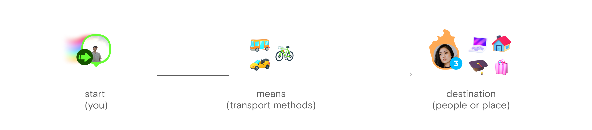
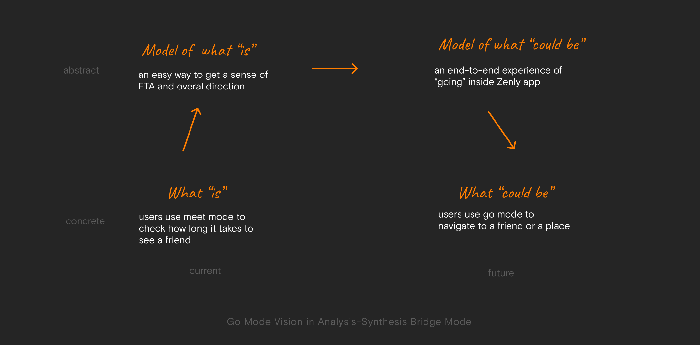
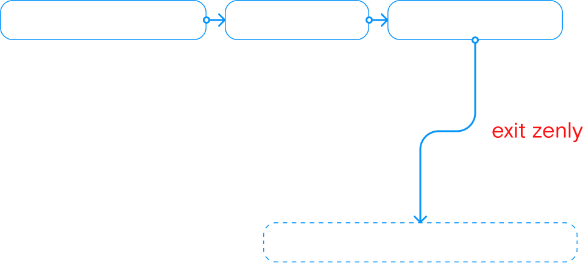
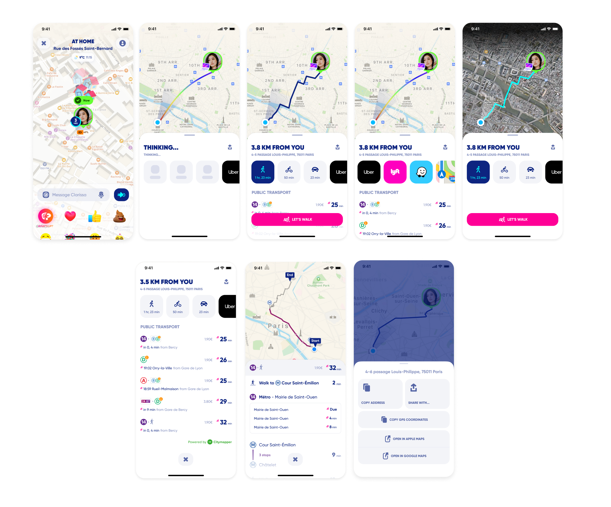

I re-designed Go Mode(previous "Meet Mode") to enable people to not only get an ETA of meeting up with their friends, but also being able to get direction and transport recommendation of going there.
 A Typical User Flow Before Redesign (“Meet Mode”)
From user funnel analysis
Ideal User Flow after Redesign (“go Mode”)
 
It is not uncommon that the users won’t get all the data output we designed in the most ideal scenarios because of many factors: bad internet, destination is too close / too far, public transport coverage...
In those edge cases, we don’t want to make the users feel that they did something wrong. In the following screens, you can find some special treatments we did to make Go Mode a fun feature even if without navigation-related output.
10/10 of the participants from street interviews were able to complete the task we assigned
Going to people and places with scooter
01. Find the closest scooter from all providers
02. Going to the scooter with turn-by-turn navigation
03. Unlock & Go
04. Find parking near the destination